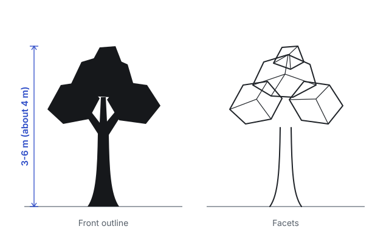

Low-poly tree
Beginner OBJ required Modeling
Done? Check your file The check is free; the full review is $9.
The brief

Model a stylized low-poly tree: a trunk that flares at the base, two to four visible branches and a canopy of faceted clumps.
Make every triangle count: the whole tree fits in 500 triangles once triangulated. The faceted look is the style, so flat shading is expected; what matters is a readable, appealing shape.
Build it at 3 to 6 metres tall. Clumps may intersect, but no face may be left open where the camera can see inside.
Spec
- Height: 3-6 m
- Triangles once triangulated: 500 or fewer
- N-gons: 10 or fewer
- 0 non-manifold edges
- Trunk, 2-4 branches, faceted canopy clumps
- Export: OBJ, Triangulate Faces off
Rubric
| Line | What good looks like | Weight |
|---|---|---|
| Topology, measured Measured by code from your OBJ · free | Within the budget, no n-gons over the limit, mostly quads, no non-manifold edges, at the right size.Score guide
| Weight 20 |
| Silhouette and proportion Graded by AI in the full review | An appealing tree shape at a distance: a canopy wider than the trunk is tall, clumps of varied size, a trunk that tapers and flares.Score guide
| Weight 30 |
| Brief compliance Graded by AI in the full review | Flared trunk, two to four branches, faceted canopy clumps, built at 3-6 m.Score guide
| Weight 25 |
| Shading artefacts Graded by AI in the full review | Facets read as deliberate style: no stretched slivers, no inverted normals, no holes where clumps meet the trunk.Score guide
| Weight 25 |
| Edge flow, observed Noted, not scored | Few, purposeful edges; clumps share a consistent facet size. | Weight 0 |
How to export
Blender
- Select the tree in Object Mode.
- File > Export > Wavefront (.obj).
- Turn on Selection Only (Limit to: Selected Only in Blender 4), leave Triangulate Faces off (Triangulated Mesh) and keep Apply Modifiers on.
- Keep Scale at 1.00 and the default axes (Y up).
Then drop the file below.
Maya
- Windows > Settings/Preferences > Plug-in Manager: tick Loaded for objExport.mll.
- Select the tree.
- File > Export Selection, Files of type: OBJexport.
- Leave Materials off; your scene units (cm) are kept.
Then drop the file below.
3ds Max
- Select the tree.
- File > Export > Export Selected, Save as type: gw::OBJ-Exporter (*.OBJ).
- In the exporter: Faces: Polygons (not Triangles) and Flip YZ-axis on.
- Check that Scale matches your scene units.
Then drop the file below.
Other
- Export Wavefront OBJ with triangulation off, so quads stay quads.
- Export one mesh at real-world scale.
Then drop the file below.
Check your file
or drop it here (OBJ, GLB, glTF, FBX; MP4, WebM, PNG/JPG frames). Nothing is uploaded.
More practice: Low-poly mug, Rounded cube, holding edges, Chair to dimensions, or all six modeling exercises.